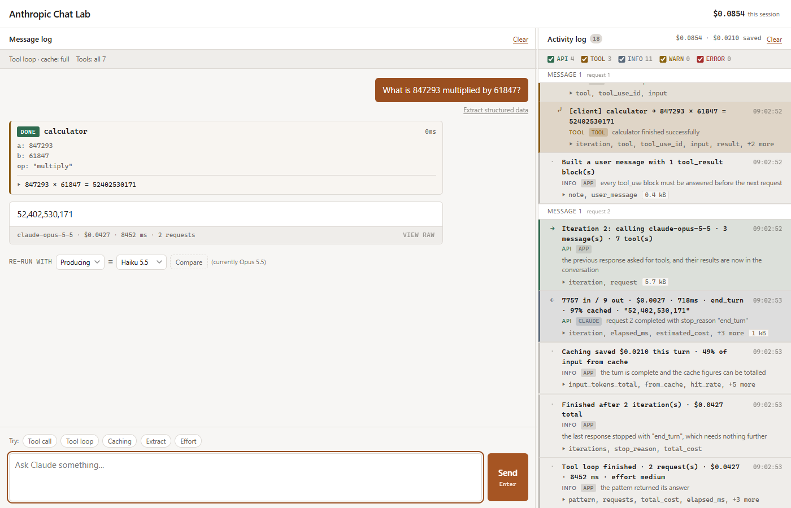
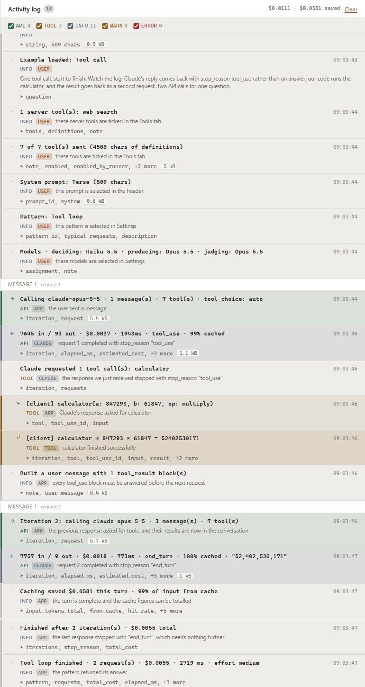
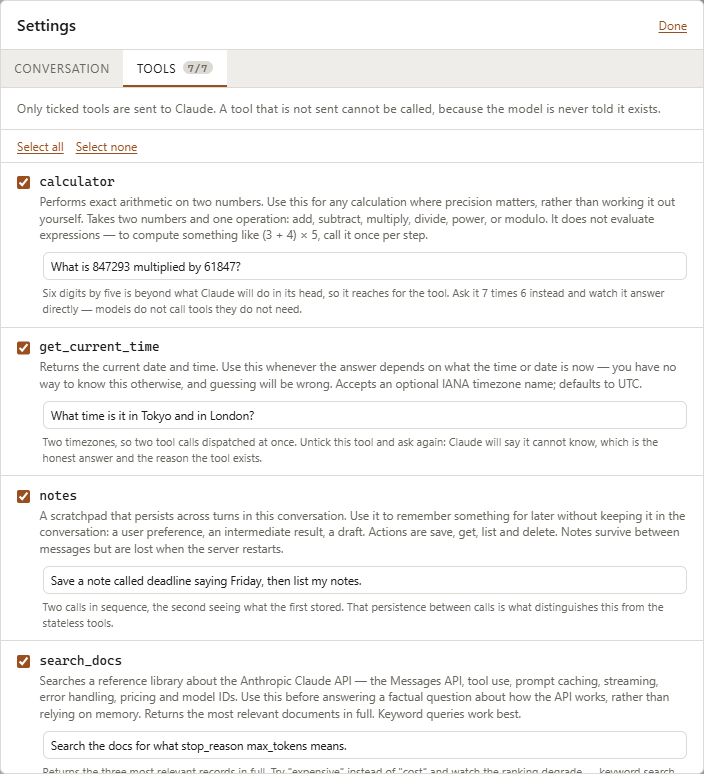
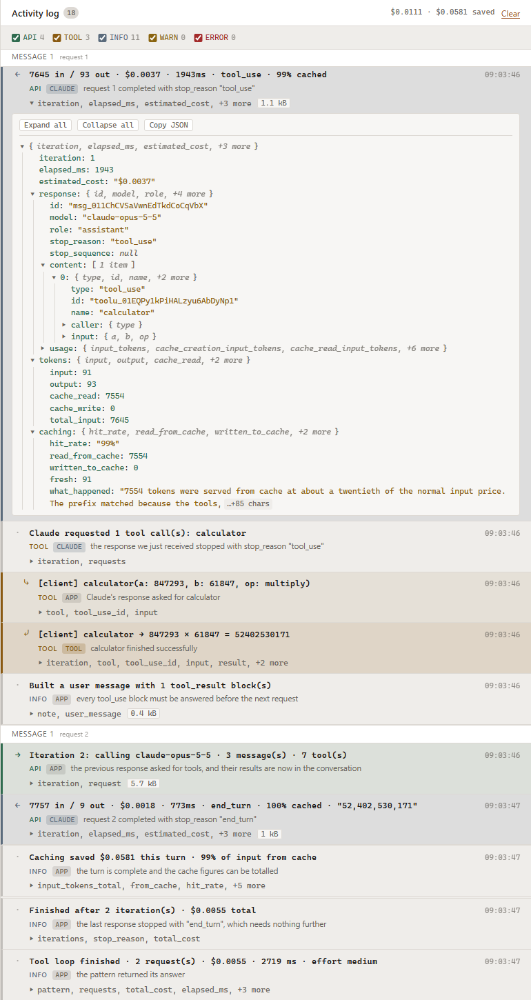
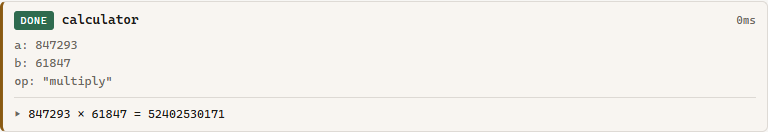
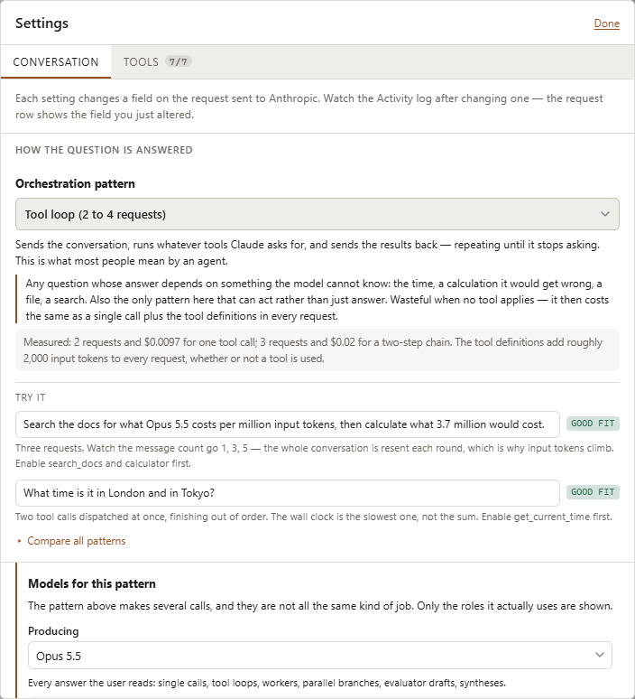
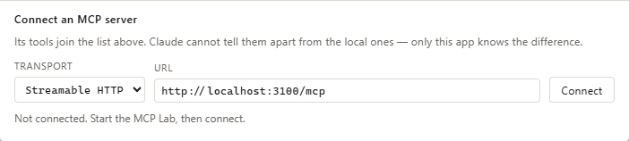
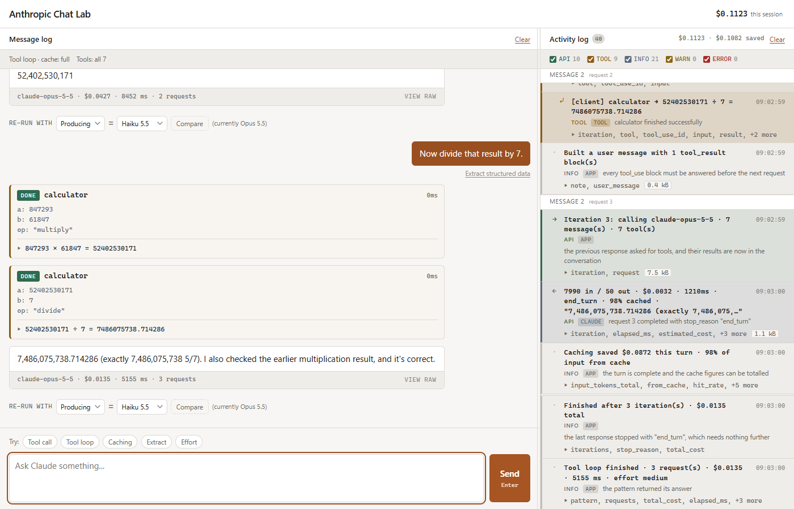
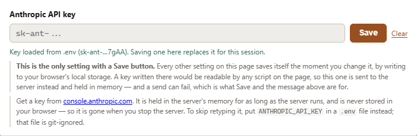

Anthropic Chat Lab · how it works
What the app does, how one message travels from the browser to Claude and back, and why each part is built the way it is, with the real code.
If you only have a minute
Chat Lab is a local teaching app for the Claude API. On the left is an ordinary chat. On the right is an activity log that shows every request sent to Anthropic and every response that comes back: the real JSON, the token counts, the cost, and a sentence explaining why each step happened.
It is a TypeScript app with two halves. The browser half has no framework and never sees the API key. It posts the conversation to a small Express server. The server holds the key in memory, calls Claude through the official SDK, runs any tools Claude asks for, and streams everything back to the browser over Server-Sent Events.
You can change the moving parts between messages and watch the numbers move. There are seven orchestration patterns, from a single call through a tool loop to orchestrator-and-workers, and a model for each role. You can also change the tools (six local, one Anthropic-hosted, plus any from a connected MCP server), the system prompt, prompt caching, thinking display and effort. The point is to see how the API behaves, and what it costs, rather than read about it.
Three ideas carry most of the design, and the rest of this page keeps coming back to them:
calculator with these arguments". The server runs the function and sends the result back in another request. The log keeps "Claude asked" and "our code did" visibly separate.Two panes, one dialog, five example buttons
The window has two columns, each with its own header and its own Clear button. The Message log on the left is the conversation. The Activity log on the right lists what each turn actually did, grouped by message and by request. Above the conversation, a one-line summary shows the current settings (only the ones changed from the default). Click it to open the Settings dialog. The running cost for the session sits at the top right.

claude-opus-5-5 · $0.0427 · 8452 ms · 2 requests. The log on the right shows the second request carrying the tool result back.A typical session goes like this:
→ data left the machine, ← data came back, · something happened locally), a level tag (API, TOOL, INFO, WARN, ERROR), an actor chip (USER, APP, CLAUDE, TOOL), a "because…" sentence, and an expander holding the real payload.Browser · Express server · Anthropic API · tools · MCP
There is a hard boundary between the two halves. server/ owns the SDK, the key and tool execution. public/ is browser code and compiles in place (public/app.ts becomes public/app.js). Between them sits shared/types.ts, the wire contract, which both halves import. That way they cannot disagree about what crosses the connection.
The browser never talks to Anthropic. That choice is not decoration. It is the only way to keep a key secret in a web app. A key held in frontend code can be read by anyone who opens DevTools.
A few numbers make the picture concrete. There are 17 HTTP routes, 7 patterns and 7 built-in tools (6 run by this server, 1 by Anthropic). There are three model roles: deciding defaults to Haiku 5.5, while producing and judging default to Opus 5.5. There is no database. Everything that changes at runtime is held in memory or in the browser: the API key, the MCP connection, notes saved by the notes tool and the conversation history.
“What is 847293 multiplied by 61847?” · tool loop · two API calls
This is the whole journey in plain words, using the Tool call example. Each step names the file where it happens.
The browser builds a snapshot. handleSubmit in public/app.ts shows your message, then adds it to the browser's own copy of the conversation. It posts the whole conversation to /api/chat, together with the settings: prompt id, ticked tool names, pattern, model per role, cache mode, thinking display and effort.
The server opens a stream. The /api/chat route in server/index.ts sets the SSE headers and calls flushHeaders(). It then creates a Logger whose output goes straight down the open connection as {type: "log"} events.
It validates everything. parseMessages drops malformed turns. Unknown prompt ids, patterns, models and effort levels fall back to defaults. Tool names are filtered against the tools that really exist. Nothing from the request body is trusted, because anyone with curl can post to the route.
It builds the tools array. Ticked local and MCP tools go through toApiTools(). Ticked server tools (web_search) are appended to the same array. Log rows record exactly which definitions were sent and how many characters they take up.
It hands off to a pattern. The route looks up the selected pattern and calls pattern.run(context). From here the route does not know whether one request or eight will follow.
Request 1. The tool loop marks cache breakpoints and logs the full request body (→ Calling claude-opus-5-5 · 1 message(s) · 7 tool(s)). It then calls getClient().messages.stream(request). Text fragments go to the browser as delta events while they are generated.
Claude asks for a tool. The response has stop_reason: "tool_use" and a tool_use block: calculator({a: 847293, b: 61847, op: "multiply"}) with an id like toolu_…. There is no answer yet.
The server runs it. runOneTool sends a tool_start event, so a tool card appears. It validates the arguments against the tool's schema, calls run(), and sends tool_end with the result 847293 × 61847 = 52402530171.
Both turns are appended. The assistant turn (with its tool_use block) and a user turn holding a tool_result are pushed onto the messages. The tool_result quotes the same tool_use_id.
Request 2. The whole conversation, now three messages, is sent again with the same tools. Because the prefix is identical, most of it is read from the prompt cache. The response is end_turn with the text 52,402,530,171.
Done. The pattern returns {text, cost, requests}. The route logs a summary and sends a done event with the authoritative final text, cost, elapsed time, request count and models used. The browser renders the reply as Markdown, adds the cost footer, and stores the reply in its history for the next turn.

USER actor: what you ticked and selected) come first. Then come request 1, the tool round trip, and request 2. Arrows show where bytes moved, and actor chips show whose decision it was.server/index.ts · Express 5 · Server-Sent Events
server/index.ts is the entry point. It does three jobs: it serves the frontend from public/ with express.static, it answers the API routes, and it holds the key (through api-key.ts). The JSON body limit is raised to 2mb because a long conversation is resent on every turn.
| Route | What it does |
|---|---|
| POST /api/chat | Runs one turn through the selected pattern and streams it as SSE |
| POST /api/extract | Structured extraction on demand, also streamed as SSE so its API call appears in the log |
| GET /api/key-status | Whether a key is set, a masked hint, and its source (env or settings) |
| POST /api/key DELETE /api/key | Set a key (shape-checked) or forget it. Clearing falls back to a .env key if one exists |
| GET/POST/DELETE /api/mcp | MCP connection status, connect, disconnect |
| GET /api/tools | Tool metadata only (name, description, who runs it, example prompt). Schemas and functions stay on the server |
| GET /api/patterns, /prompts, /models, /cache-modes, /thinking-options, /effort-levels, /tool-choices | The options each Settings control offers, with the explanatory text that sits beside the code |
| GET /api/health | Liveness check that involves neither Claude nor the key |
The route comments weigh up the options. Plain JSON would leave a blank screen for the 30 seconds a five-call pattern can take. WebSockets are two-way, which is more machinery than needed, because the browser sends one request and then only listens. SSE is one-way, runs over an ordinary HTTP response, and needs no library or protocol upgrade. Every event goes through one function:
function send(event: StreamEvent): void {
res.write(`data: ${JSON.stringify(event)}\n\n`);
// ^^^^
// Two newlines: one ends the data line, one ends the message.
}
// A logger whose events go straight down the wire. This is what
// server/logger.ts buys: the logger does not know it is talking to a
// browser, and the patterns in server/orchestration/patterns/ do not
// either — they take a Logger and call it.
const log = makeLogger((event) => send({ type: "log", event }));POST /api/chat handlerThe blank line is what ends a message. Without it the browser buffers forever. The route also ends the response in a finally block, so a failure can never leave the browser waiting on a stream that will not finish.
Once input is validated and the tools and prompt are assembled, the route passes everything to the pattern in one context object. That includes four callbacks that turn pattern events into stream events:
const result = await pattern.run({
messages,
system: prompt.text,
tools: apiTools,
toolChoice,
models,
cacheMode,
thinkingDisplay,
effort,
log,
emitText: (fragment) => send({ type: "delta", text: fragment }),
emitThinking: (text) => send({ type: "thinking", text }),
onToolStart: (id, name, input, iteration) =>
send({ type: "tool_start", id, name, input, iteration }),
onToolEnd: (id, name, toolResult, isError, elapsedMs) =>
send({ type: "tool_end", id, name, result: toolResult, isError, elapsedMs }),
});explainError() turns any failure into a short log summary, a plain user-facing message and a retryable flag. It checks MissingKeyError first, then the SDK classes from most specific to most general: AuthenticationError (401), RateLimitError (429), NotFoundError (404, "usually a misspelled model ID"), BadRequestError (400), InternalServerError, APIConnectionError, and finally APIError. The order matters because every SDK error is also an APIError. Test that first and it swallows the distinction between "wait and retry" and "this will never work". Matching on message text is avoided on purpose: wording changes between SDK versions, but the classes do not.
shared/types.ts · server/logger.ts
shared/types.ts contains only types and compiles to nothing. It defines StreamEvent, a discriminated union of everything the server can send: log, delta, thinking, tool_start, tool_end, extracted, done and error. The browser's handler switches on type, so adding a variant and forgetting to handle it is a compile error rather than a silent no-op.
A LogEvent carries a label (the one-line summary), a level (what kind of thing happened), a direction (which way bytes moved, if at all), an actor (whose decision it was), a because phrase, an iteration that groups rows under their request, and an optional detail payload. Direction and actor are separate on purpose, and the type's comment gives the test for choosing a direction:
* Ask: did data cross a boundary AT THE MOMENT this row was logged?
*
* If not, the direction is "none", however much the row is ABOUT
* something that crossed one.
* ...
* `actor` is a separate question and does not have to agree. "Claude
* requested 2 tool calls" has no direction but its actor is "claude",
* because the model made that decision even though our code is what
* noticed it. Direction says where bytes moved; actor says whose
* decision it was.
*/
export type LogDirection = "out" | "in" | "call" | "back" | "none";LogDirection commentThat comment records three rows that once had the wrong direction, all in the same way. Each one made the panel claim more round trips than really happened, which is exactly the confusion the column exists to prevent.
The warn level also has a reason behind it. Five of the seven patterns do not run client tools, and all tools are on by default. Without a separate warning level, every run of those patterns would open with a red row, and a red row that appears every time soon stops being read.
makeLogger(emit) returns an object with info, api, tool, warn and error. Each builds a well-formed LogEvent, stamps it with Date.now(), attaches only the fields that are present, and passes it to emit. In a request, emit writes to the SSE connection. In a test it could push onto an array. Patterns take a Logger rather than the HTTP response, so they can run from a script or a test with no server at all.
server/tools/ · types → definitions → registry
A tool is a function Claude can ask the server to run. The code is arranged in three layers, and the order is a dependency rule, not just tidiness. types.ts defines what a tool is and imports nothing from the modules that use it. Each file in definitions/ imports the types. registry.ts imports the definitions. An earlier version put the interface in the registry. Tool files and the registry then imported each other, which worked with one tool and crashed at startup with two (Cannot access 'currentTime' before initialization).
Each tool file declares a name, a description written for the model, a Zod input schema, an async run that returns a string, and an example prompt for the Tools tab. The calculator is the canonical one. Notice what it does not accept:
const inputSchema = z.object({
a: z.number().describe("The first number"),
b: z.number().describe("The second number"),
op: operationSchema.describe("Which arithmetic operation to perform"),
});
// ...
run: async ({ a, b, op }) => {
let result: number;
// A switch, not an evaluator. Every branch is code we wrote; nothing
// from the model is ever executed.
switch (op) {
case "add":
result = a + b;
break;
// ...
// Return the whole calculation, not just the number. "42" tells Claude
// nothing about what produced it; if several tools ran in parallel, the
// restated sum is what lets the model match result to request.
return `${a} ${SYMBOLS[op]} ${b} = ${result}`;Its header explains the security point. The obvious calculator takes an expression string and calls eval. That is remote code execution reachable through a chat box, because the string comes from the model and the model is influenced by whatever the user typed. The fix is structural: accept two numbers and a named operation, so there is nothing to evaluate. The same idea applies to every tool. If the input is "some code" or "a command", ask whether it could be a small set of named options with typed arguments instead.
The schema does double duty. It is converted to JSON Schema to tell Claude which arguments are valid, and it validates the arguments Claude sends back. One definition cannot drift from itself. Since MCP support arrived, a tool's schema has been typed as SchemaLike rather than a Zod type. It names exactly the two operations the app performs on a schema:
export interface SchemaLike {
/** The JSON Schema to send to the API. */
toJsonSchema(): Record<string, unknown>;
/** Checks arguments before `run` sees them. Never throws. */
safeParse(input: unknown): SchemaParseResult;
}defineTool() wraps each local tool's Zod schema with fromZod(), so tool files still write plain z.object({...})toApiTool() in tools/api-format.ts produces {name, description, input_schema, strict: true}. The function itself is never sent: Claude learns what a tool is called, what it does and what it takes, but never how it works. On the way, the function deep-clones the schema with structuredClone, because it is about to delete keys and an MCP tool returns the same schema object every time. It deletes $schema. It guarantees a required array, and sets additionalProperties: false on every object node. It also strips value constraints that strict mode rejects: minimum, maximum, pattern, format, minLength and others. Those bounds are not lost. The tool runner still enforces them, because it validates against the original schema.
When no tools are ticked, toApiTools() returns undefined rather than [], so the tools field is left out altogether. The model is never told any tools exist, which is what "Select none" means.

| Tool | Runs on | What it demonstrates |
|---|---|---|
| calculator | this server | The basic loop, and verifiable output. No eval |
| get_current_time | this server | Something the model genuinely cannot know |
| notes | this server | State across calls, and multi-step loops |
| search_docs | this server | Retrieval over a local corpus (server/data/kb.json) |
| read_file | this server | Sandboxing: resolve the path, then check it is inside |
| flaky_service | this server | Controllable failure: failRate: 1 always fails |
| web_search | Anthropic | A server tool: no loop and no client code. The response ends with end_turn |
web_search is declared as { type: "web_search_20260209", name: "web_search", max_uses: 3 } and that is the whole integration. There is no schema, no function and no result to send back. Anthropic runs the search during the response and keeps generating. The giveaway is stop_reason. A client tool stops the response with tool_use and waits for us. A server tool ends with end_turn, and the response carries server_tool_use and web_search_tool_result blocks as an audit trail. Searches are billed per request, separately from tokens, and the results Claude reads count as input tokens too.
server/orchestration/patterns/tool-loop.ts · tool-runner.ts
The tool loop is the default pattern, and it is what most people mean by "an agent". Send the conversation. If Claude answers, stop. If it asks for tools, run them, append both turns, and send the whole conversation again. Repeat until it stops asking, or until the cap of MAX_TOOL_ITERATIONS = 10 is reached. It is a loop rather than "ask, run, ask again" because a question like "search the docs, then calculate from what you found" needs three requests, and nothing limits how many a question might need.
const response = await stream.finalMessage();
// ...
// --- Is Claude finished? ----------------------------------------------
//
// Anything other than tool_use means the turn is over: end_turn is
// a normal answer, max_tokens is a truncated one, refusal means a
// safety classifier declined. None of them want anything from us.
if (response.stop_reason !== "tool_use") {
break;
}
// --- It wants tools ----------------------------------------------------
const requests = response.content.filter(
(block): block is Anthropic.ToolUseBlock => block.type === "tool_use",
);
// ...
const toolResults: Anthropic.ToolResultBlockParam[] = await Promise.all(
requests.map((request) => runOneTool(request, iteration, log, onToolStart, onToolEnd)),
);
// ...
messages.push({ role: "assistant", content: response.content });
messages.push({ role: "user", content: toolResults });run(), trimmed. The full file keeps the loop at the top and moves every log-row builder below a banner, so the five steps stay readable.Each line in that excerpt is backed by a reason in the source:
content[0]. The same response can carry text, thinking and tool_use blocks side by side.Promise.all. Claude asking for several tools in one turn means they are independent, so three 300 ms tools finish in 300 ms rather than 900 ms. Promise.all also keeps results in the same order as the requests.tool_result blocks would answer nothing.tool_choice is sent on the first pass only. Forcing a tool on a later pass would make Claude call another tool instead of answering with the result it just got.stop_reason: "max_tokens" comes back as HTTP 200 and looks like a normal reply, so the loop logs it as an error.
stop_reason: "tool_use", a single tool_use block with its toolu_… id, and below it the named token breakdown and a plain-words caching.what_happened.tool-runner.ts runs a single tool_use block, and its key promise is that it never rejects. Promise.all gives up on every other promise as soon as one rejects. A single failing tool would then leave its siblings uncollected, and the next request would be missing answers the API requires. So every failure path returns a tool_result with is_error: true instead of throwing:
const finish = (
result: string,
isError: boolean,
elapsedMs: number,
): Anthropic.ToolResultBlockParam => {
onToolEnd(request.id, request.name, result, isError, elapsedMs);
return {
type: "tool_result",
tool_use_id: request.id,
content: result,
...(isError ? { is_error: true as const } : {}),
};
};runOneTool ends hereThree failure paths reach it. An unknown tool name gets a warn row and an errored result. Invalid arguments are caught by tool.inputSchema.safeParse() before the tool runs. The issues are formatted as field: message so Claude can correct itself and retry. This parse is not redundant with strict: true: strict mode guarantees the shape, not the values, and the numeric bounds were stripped from the schema the API sees. The source lists what got through before the parse existed: limit: 500 on search_docs, a: "7" on the calculator (string concatenation gave 72), and an unknown notes action that crashed with an internal error. Finally, a tool that throws is caught, and its message goes back to Claude, which can respond to the failure instead of the whole request dying.

tool_start and tool_end events. It shows "running" while the tool works and becomes "interrupted" if the stream dies first.server/orchestration/ · one interface, seven strategies
A pattern is a strategy for turning a question into an answer using Claude. Every pattern implements one Pattern interface: an id, a name, the teaching text, the roles it uses, example prompts (one good fit and one poor fit), and an async run(context) that returns {text, cost, requests}. Having one interface instead of a switch statement gives three things. The dropdown can swap patterns at runtime. A pattern can run from a script with no server. Adding a pattern touches one file and one array.
| Pattern | Requests | Roles | How it works |
|---|---|---|---|
| Single call | 1 | producing | One request, streamed. The baseline. Sends server tools only. If Claude asks for a client tool, it stops and says so |
| Tool loop | 2 to 4 | producing | The agentic loop above. The default pattern |
| Prompt chaining | 2 | deciding, producing | An outline call, then a writing call. The outline goes into the second call's system prompt, not into messages |
| Routing | 2 | deciding, producing | A cheap classifier picks a category (debugging, concept, code, cost, or general as the escape hatch), then a specialist prompt answers |
| Parallelisation | 4 | producing | Three fixed branches (mechanism, practice, pitfalls) run at once, then a fourth call merges them. Buys latency, not money |
| Orchestrator + workers | 3 to 7 | deciding, producing | A planner returns a JSON plan of 1 to 5 subtasks via structured outputs. Workers answer them in parallel, then a synthesis call merges |
| Evaluator + optimiser | 2 to 6 | producing, judging | Draft, judge against explicit checkable criteria, regenerate with feedback, up to a limit |
Each call a pattern makes belongs to one of three roles. Deciding covers short structured output that feeds code: the router's classifier and the planners. It defaults to Haiku. Producing is anything the user reads, and defaults to Opus. Judging is the evaluator's verdict. It also defaults to Opus, because a judge less capable than the writer passes everything. Patterns read context.models rather than a hard-coded id, so Settings can change them. The dialog shows only the roles the selected pattern uses. The orchestrator's header records the measurement behind the default: across three questions, Haiku produced plans as good as Opus's for about a fiftieth of the cost, in roughly half the time.

Pattern object, so the explanation lives beside the code it describes. Only the roles this pattern uses are offered.The orchestrator's plan is read by code, so it is requested as JSON that matches a Zod schema, through output_config.format. The API then constrains generation so the reply validates. There is no code fence or apologetic preamble to strip before JSON.parse. The same mechanism powers the evaluator's verdict and the on-demand Extract structured data action (server/extract.ts).
const planRequest = {
model: deciding,
max_tokens: PLAN_MAX_TOKENS,
system: PLANNER_SYSTEM,
messages,
// Thinking is always on; this decides whether its summary comes
// back readable. See server/thinking.ts.
thinking: { type: "adaptive" as const, display: thinkingDisplay },
// The plan schema and the effort level share ONE output_config.
// Both go in the same object: a second `output_config:` key
// would not merge, it would silently replace the first and the
// format would be gone.
output_config: { format: zodOutputFormat(PlanSchema), effort },
};
// ...
// .parse() rather than .create(): it applies the schema and
// returns the validated object on parsed_output.
const planResponse = await getClient().messages.parse(planRequest);Five patterns never handle a tool_use response. That is a deliberate scope decision: a chaining pattern that also loops is just the tool loop with extra steps. no-tools.ts draws the line carefully. Client tools are dropped with a warn row, so the Tools tab count does not mislead. Server tools are still sent, because they need no loop. Without that rule, every pattern except the tool loop would quietly discard web_search.
server/mcp/client.ts · schema.ts · Model Context Protocol
Settings → Tools can connect to one MCP server, over Streamable HTTP (for example the companion anthropic-mcp-lab at http://localhost:3100/mcp) or over stdio by launching a command. The server's tools then appear in the Tools tab, badged mcp, and are ticked and sent exactly like local ones.

The design point to explain is this: the tool loop was not changed to support MCP. From the model's point of view there is no second kind of tool. One tools array goes out, one tool_use block comes back, and one tool_result goes into the next request. So client.ts adapts each remote tool into the same AnyLabTool shape and puts it in the same list. Its run forwards the call:
async run(input: unknown): Promise<string> {
// Checked at call time rather than captured at adaptation
// time. A tool whose connection has been closed should say so
// clearly; a captured `client` would throw something less
// helpful from inside the SDK.
if (!client) {
throw new Error(
"The MCP server is no longer connected. Reconnect it in " +
"Settings, or untick this tool.",
);
}
const result = await client.callTool({
name: tool.name,
arguments: (input ?? {}) as Record<string, unknown>,
});
// ...
// The remote server reports failure in-band, with isError on
// a normal result rather than a protocol error. Rethrown here
// so the tool loop treats it exactly like a local tool
// throwing — which is what puts is_error on the tool_result
// and lets Claude recover.
if (result.isError) {
throw new Error(text || "The MCP tool reported an error.");
}
return text;
},adaptTools(). Non-text content blocks are named ([image content, not shown]) rather than silently dropped.A few details make this work:
oneOf, $ref, recursion), and a lossy converter fails silently, as a tool that rejects valid arguments. schemaFromJson() returns a SchemaLike whose toJsonSchema() gives back the server's schema. Its safeParse() validates with the MCP SDK's fromJsonSchema, used purely as a validator.findTool(), not the static Map. TOOLS_BY_NAME is built at import time and cannot see a tool that arrives later over a connection. getActiveTools() and findTool() merge local and borrowed tools at call time. A comment in the chat route records the bug this fixed. The route once filtered the requested tools against the local registry only, so borrowed tools showed in the Tools tab but were never sent, and Claude never asked for them.warn row. It cannot be a startup crash like a local duplicate, because the remote tools are not ours to rename.tools/registry.ts and mcp/client.ts import each other. The cycle resolves only because neither calls the other while modules are loading. A top-level call on either side would break it.server/caching.ts · thinking.ts · effort.ts
The API renders every request in a fixed order: tools → system → messages. A cache entry covers everything up to a cache_control breakpoint, and any byte that changes before the breakpoint invalidates it. So the question is not "what is big" but "what is identical every time, and is it at the front". In this app the tool definitions are identical while the Tools tab is unchanged and are routinely most of the request. The system prompt is identical within a conversation. Earlier turns of the conversation are stable, but the newest one is not.
export function withCachedTools(
tools: Anthropic.ToolUnion[] | undefined,
mode: CacheMode = "full",
): Anthropic.ToolUnion[] | undefined {
if (mode === "off") return tools;
if (!tools || tools.length === 0) return tools;
return tools.map((tool, index) =>
index === tools.length - 1
? ({ ...tool, cache_control: EPHEMERAL } as Anthropic.ToolUnion)
: tool,
);
}There are three modes. off sends no markers and is the baseline. prefix marks the last tool and the system prompt (which becomes a one-element text-block array, because a plain string has nowhere to carry cache_control). full, the default, also marks the last settled message, at messages.length - 2. That leaves the new question outside the cached prefix, since it differs every turn and would never match. Two traps are explained out loud in the log. First, a prefix below the minimum (1,024 tokens on Opus and Sonnet, 2,048 on Haiku) is silently not cached, so the app warns when its estimate falls short. Second, Single call strips client tools, so it rarely has a prefix long enough to cache.

98% cached. The summary row adds up what caching saved across every request in the turn (CacheTally).On the models this app offers, thinking is always on and always billed. Every request carries thinking: { type: "adaptive", display: thinkingDisplay }. display is either "omitted", where the blocks arrive with empty text, or "summarized", where you get a readable summary of reasoning that already happened. The setting does not make the model think more or cost more. The field is written out in full even when it matches the API default, so that it appears in the logged request body. Two shapes that older tutorials show (type: "enabled" with budget_tokens, and type: "disabled" on Opus 5.5) are rejected by these models.
output_config: { effort } takes one of low, medium, high, xhigh and max. Effort is a dial: the model decides how many tokens a level deserves for the question in front of it, instead of you guessing a token budget. The app always sends a level explicitly, because the default differs by model (medium on Opus 5.5 and Haiku 5.5, high on Sonnet 5.5), and an unpinned comparison would quietly compare effort levels too. Effort shares output_config with format. A request literal must put both in one object, because a second output_config key replaces the first rather than merging with it.
server/usage.ts · the cost figures in the UI
Every response carries a usage object. summariseUsage() names its fields (fresh input, output, cache read, cache write, total input) and prices them from a hard-coded table. Opus 5.5 is $4 input and $20 output per million tokens, Sonnet 5.5 is $2 and $10, and Haiku 5.5 is $0.10 and $0.50. Cache reads are discounted, and cache writes are charged at 1.25× input. The rates are illustrative and will go out of date. They exist so that you notice one pattern costing four times another, not for billing. An unknown model falls back to Opus rates rather than showing $0.00, because "$0.00" reads as "free", not "not priced here".
const cost =
(input / 1_000_000) * rates.input +
(output / 1_000_000) * rates.output +
(cacheRead / 1_000_000) * rates.cacheRead +
// Writing to the cache costs 25% more than fresh input.
(cacheWrite / 1_000_000) * rates.input * 1.25;summariseUsage()Each pattern adds up the cost of every request it makes, and the route reports the total on the done event. That total is the figure in each reply's footer. CacheTally keeps a running total of what was billed for input against what the same tokens would have cost uncached. That gives one honest "caching saved $X this turn" figure instead of per-request hit rates that bounce around. formatCost() shows four decimals below a dollar, because every figure here falls between a tenth of a cent and a few cents, and rounding to "$0.02" would hide the difference being studied.
The browser adds a turn to the session total whenever a log row's detail carries a numeric total_cost (public/log.ts). On a tool-loop turn with more than one request, two rows carry one: the loop's own "Finished after N iteration(s)" row and the route's "Tool loop finished" row. So the session figure in the header counts that turn twice. In the first screenshot the reply footer says $0.0427, while the header says $0.0854. The per-reply footer and the per-request rows are the reliable numbers.
server/api-key.ts · anthropic.ts · security invariants
The key is a non-exported module variable in server/api-key.ts, held in memory for the life of the process. It is set from the Settings dialog, which posts it once to POST /api/key. An optional git-ignored .env can seed it at startup. The key routes are deliberately asymmetric. A key goes in, and what comes out is a yes/no, a masked hint showing the sk-ant- prefix and the last four characters, and the source. There is no route that returns the key. Returning it would put the secret back into a response body, the network tab and anything that caches responses.

setKey() checks the shape first: it must start with sk-ant-, be long enough, and contain no whitespace. An obviously wrong paste is answered on the spot with a specific message, rather than later as a 401. Clearing the key falls back to the .env value if there is one. The trade-off is stated plainly: a key typed into Settings is forgotten on restart, and that is cheaper than a secret written somewhere backups and sync tools might pick it up.
export function getClient(): Anthropic {
const key = getKey();
if (key === null) throw new MissingKeyError();
// Reuse the existing client whenever the key has not changed. This is the
// normal path: one client for the whole session.
if (cached !== null && cachedKey === key) return cached;
cached = new Anthropic({
baseURL: "https://api.anthropic.com",
apiKey: key,
});
cachedKey = key;
return cached;
}getClient().messages.stream(...) and never store the resultA module-level const client = new Anthropic() would capture whatever key existed at import time, and on a fresh clone that is none at all. Caching on the key keeps one connection pool for the session and rebuilds only when the key changes. baseURL and apiKey are passed explicitly so that an ANTHROPIC_BASE_URL or ANTHROPIC_AUTH_TOKEN in the shell (common with corporate gateways) cannot silently reroute the call. A 401 from a gateway looks exactly like a bad key.
createElement and textContent, including inside the hand-written Markdown renderer. Model output is shaped by user input and tool results, and a general Markdown library would allow raw HTML such as <img src=x onerror=…>.read_file resolves, then checks. It rejects absolute paths outright. It then joins and resolve()s the requested path into a canonical absolute path, and uses path.relative() to confirm the result is still inside server/data. Resolving first collapses every ../ trick before the check runs. Inspecting the raw string is an arms race, and comparing with startsWith would wrongly accept /app/data-backup.tsconfig.client.json sets "types": [], so process and friends do not exist in browser code, even by accident.eval, arguments are validated before run, and paths are sandboxed.The README and code comments describe the app as binding to localhost. The code itself calls app.listen(PORT, …) without a host argument, and Node then listens on all interfaces (0.0.0.0:3000 while running for these screenshots). In practice, what keeps it private is the machine's firewall and the instruction not to run it on a shared network.
public/ · vanilla TypeScript · no framework, no bundler
The browser half is hand-written TypeScript compiled to ES modules with tsc -p tsconfig.client.json. There is no framework, because the page is the teaching surface, and a framework would put its own abstraction between the reader and the JSON on the wire. The modules split along one rule: the import graph runs one way. app.ts imports from log.ts, settings.ts and transcript.ts. settings.ts imports appendLog from log.ts. Nothing imports app.ts.
| Module | Owns |
|---|---|
| app.ts | Sending, reading the event stream, the A/B re-run comparison, structured extraction, presets, startup wiring |
| log.ts | The activity panel: rows, grouping by message and request, level filters, the running cost |
| settings.ts | The controls in the Settings dialog, populated from the GET /api/… option routes and remembered in localStorage |
| transcript.ts | Tool cards between messages |
| markdown.ts | A small renderer that builds DOM nodes and never produces HTML from input |
| json-tree.ts | The collapsible JSON viewer inside log rows |
| state.ts | The few values several modules write, kept on one object, because ES module exports cannot be reassigned by importers |
The browser uses fetch, not EventSource, because it needs to POST a body. It reads the response stream itself. The trap is that a network chunk is not a message: one chunk can hold three messages, or half of one. So it keeps a buffer and takes only complete messages off the front:
const reader = response.body.pipeThrough(new TextDecoderStream()).getReader();
let buffer = "";
while (true) {
const { done, value } = await reader.read();
if (done) break;
buffer += value;
// Messages are separated by a blank line. Split on it, and keep the
// final piece in the buffer — it is either empty (the last message ended
// cleanly) or a partial message still arriving.
const messages = buffer.split("\n\n");
buffer = messages.pop() ?? "";readEventStream(), trimmed. Each complete message's data: lines are joined and parsed as a StreamEvent. A malformed one is skipped, not fatal.handleStreamEvent() is an exhaustive switch over StreamEvent. While delta events arrive, the reply is shown as raw text through textContent. Re-parsing Markdown on every fragment would get slower as the reply grew, and half-arrived syntax would flicker (**bold is not bold until its closing stars land). On done, the server's complete text replaces it, rendered as Markdown, and a footer adds the models, cost, time and request count. That same complete text is what goes into the history. It is never rebuilt from deltas, because a dropped fragment would otherwise leave a subtly wrong transcript that every later turn would argue with.
The server is stateless between turns. The browser keeps state.conversation and sends all of it every time. That has consequences the code handles. If a request fails, the user turn that was pushed before sending is popped again. Otherwise the next request would carry two user turns in a row, which the API rejects, and one failure would poison every request after it. Empty replies are never stored, because the API rejects empty content.
A short glossary
max_tokens cap, an optional top-level system, optional tools, and the messages array. It is stateless: each call carries the whole conversation.end_turn is a normal answer. tool_use means Claude wants a client tool run. max_tokens means the reply was truncated. refusal means it was declined.tool_use has an id, and the next user turn answers it with a tool_result quoting that tool_use_id, with is_error: true on failure.tools/definitions/, plus anything borrowed over MCP.web_search). No loop and no tool_result.stop_reason is no longer tool_use, with a cap of 10 iterations.Pattern interface.data: … plus a blank line.shared/types.ts.cache_control breakpoints. Reads are much cheaper than fresh input, and writes cost 25% more.thinking: {type: "adaptive"}. The model decides how much to reason. display only controls whether a summary is returned.output_config.effort: how hard the model works before answering, from low to max.output_config.format with a schema. Generation is constrained so the reply is valid JSON matching it.toJsonSchema, safeParse). It lets Zod-defined and MCP-provided tools share one list.Short answers, with the reasoning
Because the key would then be in frontend code, readable by anyone with DevTools. The server exists to hold it. The browser can set the key, but no route returns it.
It is told, in full, in every request. There is no registration step, because the API keeps no state. The log row "7 of 7 tool(s) sent (4506 chars of definitions)" shows the exact definitions and their size. That size is also why the tools array is the best thing to cache.
Each iteration resends the whole conversation, which grows by two messages (the assistant's tool_use turn and the user's tool_result turn) every round. Caching the stable prefix is what keeps that affordable.
Nothing crashes. runOneTool turns every failure (unknown tool, failed validation, a thrown error) into a tool_result with is_error: true and a message written for the model, and Claude usually corrects itself and retries. Try flaky_service with failRate: 1 to watch it happen.
Running a client tool needs a second request to carry the result back, which is a loop. Keeping the loop in one pattern makes the cost of tool use visible. Those patterns still send server tools, because Anthropic runs them without a loop.
An adapter that wraps each remote tool as a regular tool, a schema interface wide enough to hold the server's JSON Schema verbatim, and tool lookup at call time. The tool loop itself did not change, and that is the lesson.
It is an estimate from hard-coded published rates in server/usage.ts. It is good for comparing patterns, models and settings against each other, not for billing. See the note in the usage section about the session total on multi-request turns.